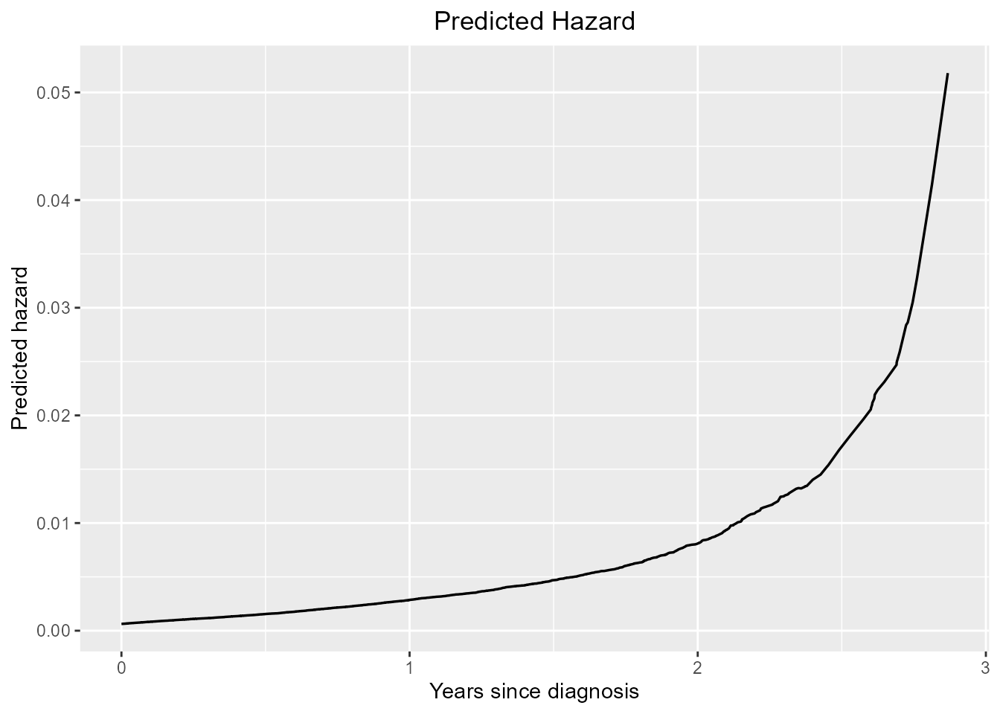
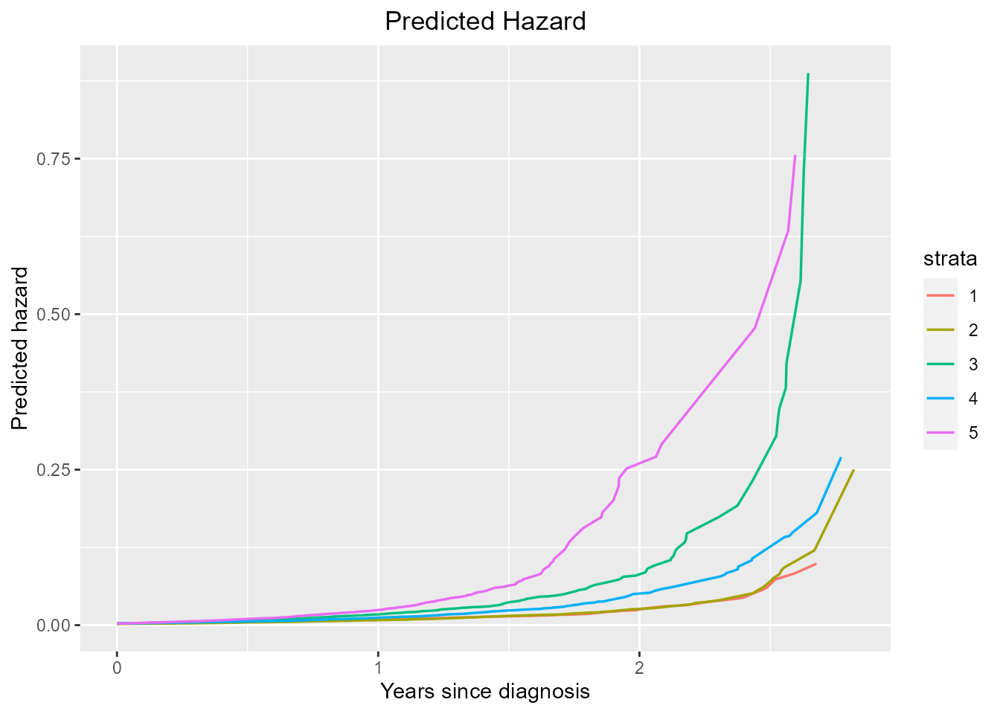

1. Introduction:
Coxtp is an R package for fitting penalized Newton’s
method for the time-varying effects model using mAIC, TIC, GIC as
information criteria, in particular we span the parameter using basis
functions. Utilities for carrying out post-fitting visualization,
summarization, and inference are also provided.
2. Installation:
#Install the package, need to install the devtools packages:
install.packages("devtools")
devtools::install_github("UM-KevinHe/surtvep")
#To install with Vignettes:
install.packages("devtools")
devtools::install_github("UM-KevinHe/surtvep",build_vignettes =T)3. Dataset preperation:
For the purpose of demonstration, we will use the simulated dataset “sim_data” in the our package.
sim_data=sim_data5.6 Model prediction:
To predict the new data, we offered the function coxtp.predict.
Suppose the new data to be predicted is c(1,1,0,0,0) for
V1 to V5. For data with no stratification:
(Suppose we already have the best tuning parameter lambda selected).
sim_data=sim_data_p5
event=sim_data[,"event"]
time=sim_data[,"time"]
data=sim_data[,!colnames(sim_data) %in% c("event","time")]
lambda_spline=100
fit_penalized <- coxtp(event = event, z = data, time = time,lambda_spline=lambda_spline)
model_result = fit_penalized$model_result
baseline=coxtp.baseline(fit=model_result, delta=event,z=data,time=time)
data_predict=c(1,1,0,0,0)
predict=coxtp.predict(model_result,baseline,newdata=data_predict)The result dataset predict is a dataset with predicted
hazard and time points in the orginal dataset. We could plot the data
using ggplot:
ggplot(predict,aes(x=unique.time.,y=lambda0_exp_betax)) +
geom_line(size = 0.6) +
scale_x_continuous(name='Years since diagnosis') +
scale_y_continuous(name='Predicted hazard') +
ggtitle("Predicted Hazard") +
theme(plot.title = element_text(hjust = 0.5))
For data with stratification, just define that
strata=T(Default is FALSE):(Again, suppose we already have
the best tuning parameter lambda selected)
event_stra=sim_data_p5_f5[,"event"]
time_stra=sim_data_p5_f5[,"time"]
data_stra=sim_data_p5_f5[,!colnames(sim_data_p5_f5) %in% c("event","time","facility")]
facility=sim_data_p5_f5[,"facility"]
#select best lambda
lambda_spline=100
fit_stra<-coxtp(event=event_stra,z=data_stra,time=time_stra,strata =facility,lambda_spline=lambda_spline)
model_result = fit_stra$model_result
baseline_strata=coxtp.baseline(fit=model_result, delta=event_stra,z=data_stra,time=time_stra,strata = facility)
data_predict=c(1,1,0,0,0)
predict=coxtp.predict(model_result,baseline_strata,newdata=data_predict,strata = T)Again, we could plot the result by ggplot:
ggplot(predict,aes(x=unique.time.,y=lambda0_exp_betax)) +
geom_line(aes(color=strata,group=strata),size = 0.6) +
scale_x_continuous(name='Years since diagnosis') +
scale_y_continuous(name='Predicted hazard') +
ggtitle("Predicted Hazard") +
theme(plot.title = element_text(hjust = 0.5))